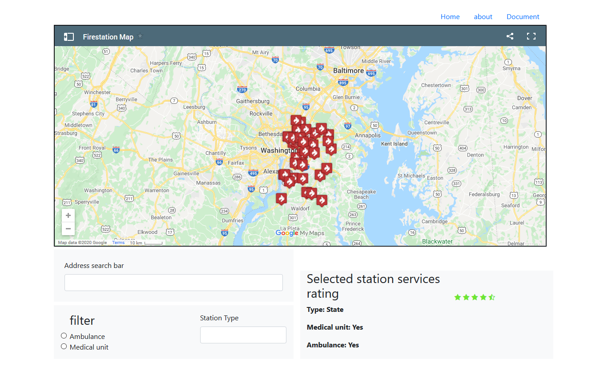

How to guide
The website will provide essential information for PG resident regarding the safe place where they can rent a room. The information provided on the site is the firestation close to the residential area and the medical facilities that can be accessed by the residentials. The website will guide the stakeholders to make decision on where they want to leave. The stakeholders may choose to leave close to a firestation because they will be safe in case a fire accident emerge. This is an advantage to the stakeholders, a disadvantage of leaving close to a firestation is that there is a lot of ambient noise.
Guide to use the site
The site contains a google map, which list all the area located near a firestation. The firestation in the map are represented by a fire icon. When you click on the marker icon the map will give you the information of the firestation whether there is an ambulance, medical unit or there is any of them. You can use the filter options to select the location you want to view. you can use the radio button to select areas with a medical unit and the areas with an ambulance. You can provide the type of station you want or provide the address of the station using the station address field.
